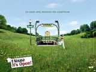

Paris, ça punit

Une bande de joyeux Picards, publicitaires en l’occurrence, m’a ce matin dans le métro jeté un sourire sur les lèvres. Leur technique est simple : une affiche 4 par 3, la photo d’une verte prairie, et ce slogan qui scotche : « l’Aisne, it’s Open! »
Alors déjà, et je le dis sans aucune distance parigote autre que géographique, le nom de ce département m’a toujours fait sourire : autant j’ai été surpris que les Côtes du Nord se rebaptisent Côtes d’Armor en 1990, autant je suis amusé par la volonté de l’inénarrable Georges Frêche de renommer le Languedoc-Roussillon en Septimanie, autant si l’Aisne voulait changer de nom je comprendrais. Ok c’est pas pire que la Faisse ou l’Aicelle, mais la différence c’est qu’aucun département ne porte un tel nom.
Du coup forcément pour les pubards axonais c’est pas facile. « L’Aisne, ça vous démange » a déjà été utilisé pour le secteur pharmaceutique. Quel dur métier, on comprend que beaucoup sombrent dans l’héroïne. Du coup, après Baudelaire, Malraux ou Gainsbourg, de nouveaux miracles apparaissent. En effet que d’humour et de poésie dans ce maniement surrané de la langue de J.K. Rowling. J’imagine avec gourmandise le brainstorming de fin de soirée dans une agence de la banlieue laonnoise, quand après douze cafés et trois rails, une zone a été réactivée dans la cervelle du plus jeune d’entre eux, faisant remonter à la surface, telle la bulle lourde et soufrée qui vient mollement éclater à la surface des geysers de l’Altiplano bolivien, le souvenir éteint des cours d’Anglais du lycée. Et soudain, tranchant les borborygmes alcaloïdés de ses congénères, cette exclamation lancée d’une voix rauque : « l’Aisne, its opaine ! ». Gros silence… Pas le petit silence d’incompréhension qui suit une citation d’Heidegger, non, un vrai silence genre boules quiès en plein milieu de l’Arctique, au moment où les manchots sont devant la télé. Comme si chaque langue dans la pièce avait soudain été carbonisée par l’étincelle du génie. Ou comme si personne n’avait voulu par une question déplacée risquer de révéler son oubli total de l’idiome albionide. Le Directeur de création, sentant son leadership menacé par ce jeune requin anglophone, mais ne pouvant risquer de désavouer cette ouverture au monde, trouva alors cette réplique parfaite : « Bravo Kevin, et on ajoutera : Ce week-end, direction the camp’Aisne ». Ben ouais, ça continue dans le trip Anglishe, et en plus ça rime. Presque. Et voilà comment on se retrouve avec le chef d’oeuvre placardé à des centaines d’exemplaires dans les tunnels gris du métropolitain. Bref je sais pas si les Picards ont autant de soleil que sur les affiches, mais en tout cas ils ont de l’humour.
Alors maintenant je vous propose de décliner la brillante idée de cette campagne : « Saint-Marcoule, it’s cool! », « Béthunes, it’s fun! », « Nice, it’s nice! », « Saint-Nazaire, it’s super! », …